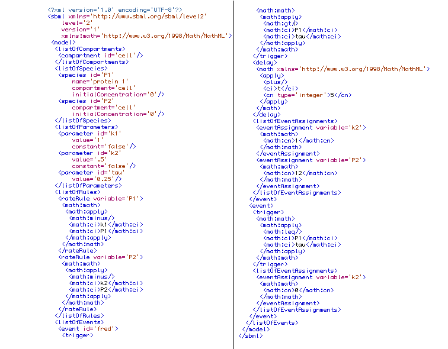

|
With the "fortran" option, a single file is generated containing several subroutines and functions:
- addp,
jac, and
res required by
lsodi
- init, which sets variables to their initial conditions
- function trigger_x for each event x, which evaluates to .TRUE. if the event's trigger condition is met, and .FALSE. otherwise
- subroutine activate_x for each event x, which performs the activity prescribed for event x.
LSODI is a function by JF Painter and AC Hindmarsh of Lawrence Livermore Lab that
is commonly available in numerical libraries, such as the one at NETLIB. The following is taken
from the program documentation: lsodi solves the initial value problem for linearly implicit systems of first order ode's,
a(t,y) * dy/dt = g(t,y)
where a(t,y) is a square matrix, or, in component form,
ai,1*dy1/dt+...+ai,neq*dyneq/dt=gi(t,y1, y2,..., yneq) ( i = 1,...,neq )
If a is singular, this is a differential-algebraic system. lsodi is a variant version of the lsode package.
Example
Suppose that the following model is contained in the file foo.xml:

To write this model to the file cfoo.for
we would type the command
SBMLWrite[inputfile -> "foo.xml",
format -> "fortran",
outputfile ->"foo.for"]
and the resulting output file
foo.for
would look like this:
C SBML Model Name: Model4
C
C Generated by MathSBML 2.1.3-beta-6 (20 Aug 2003)
C Creation Time: 20-August-2003 10:07:35.396493
C User: jamestkirk
C Machine: Slartibartifast
C Processor: PowerPC
C Machine type: PowerMac
C Oper. System: MacOSX
C --------------------------------------------------------
C
C lsodi compliant SBML model
C Reference: http://netlib.org/alliant/ode/prog/lsodi.f
C
C --------------------------------------------------------
C
C This file contains the following modules:
C
C Module Name Description
C ----------------------------- ------------------------------------------
C activate_event_2 (subroutine) Perform activity required by event event_2
C activate_fred (subroutine) Perform activity required by event fred
C addp (subroutine) Add A to any matrix - required by lsodi
C init (subroutine) Set initial conditions
C jac (subroutine) Compute Jacobian - required by lsodi
C res (subroutine) Calculate Residuals - required by lsodi
C trigger_event_2 (function) Trigger event event_2
C trigger_fred (function) Trigger event fred
C
C --------------------------------------------------------
C
subroutine res(neq,t,y,s,r,ires)
double precision r,s,t,y
C
C This is subroutine res for lsodi
C This function computes the residuals r(i)=g(t,y)- A(t,y)(dy/dt)
C for the linear-implicit system system (A)*(dy/dt)=g(t,y)
C where A is a constant, possibly singular, matrix.
C
C Here A is diagonal with (restriction imposed by SBML, not lsodi)
C A(i,i)=1, i=1,...,m, where m=# of odes in the SBML Model
C A(i,i)=0, i=m+1,...,m+nrules, where nrules =# of algebraic rules
C A(i,i)=0, i=nrules+1,...,nvars, where nvars is the total number
C of variables in the system and nvars-nrules-m>0 is the
C number of variables controlled purely by events
C
C If the system is purely differential
C the right-hand side of the system dydt = g(y,t) will
C be returned if s is zero-filled.
C
C Representation of Model Variables by the array y
C ------------------------------------------------
C y(1) = P1
C y(2) = P2
C y(3) = k1
C y(4) = k2
C
dimension r(4),s(4),y(4)
r(1)=-s(1) - y(1) + y(3)
r(2)=-s(2) - y(2) + y(4)
r(3)=-s(3)
r(4)=-s(4)
return
end
C
C
C --------------------------------------------------------
C
subroutine addp(neq, t, y, ml, mu, p, nrowp)
C
C Subroutine addp required by lsodi
C
double precision p, t, y
dimension y(4), p(nrowp,4)
integer i
Do i = 1,2
p(i,i) = p(i,i)+1
End Do
return
end
C
C --------------------------------------------------------
C
subroutine jac (neq,t,y,s,ml,mu,p,nrowp)
C
C Subroutine jac required by lsodi, computes jacobian
C
dimension y(4), s(4),p(nrowp,4)
p(1,1)=-1
p(1,2)=0
p(1,3)=1
p(1,4)=0
p(2,1)=0
p(2,2)=-1
p(2,3)=0
p(2,4)=1
p(3,1)=0
p(3,2)=0
p(3,3)=0
p(3,4)=0
p(4,1)=0
p(4,2)=0
p(4,3)=0
p(4,4)=0
return
end
C
C --------------------------------------------------------
C
Subroutine init(neq,y)
double precision y
dimension y(4)
y(1)=0
y(2)=0
y(3)=1.
y(4)=0.5
return
end
C
C --------------------------------------------------------
C
C ***** Test to see if event fred has been triggered
C
logical function trigger_fred(neq, y)
double precision y
integer neq
dimension y(4)
logical triggered
triggered=y(1).gt.tau
return(triggered)
end
C
C ***** Activate event: fred *****
C
subroutine activate_fred(neq, y)
double precision y
integer neq
dimension y(4)
y(4)=1
y(2)=12
return
end
C
C --------------------------------------------------------
C
C ***** Test to see if event event_2 has been triggered
C
logical function trigger_event_2(neq, y)
double precision y
integer neq
dimension y(4)
logical triggered
triggered=y(1).le.tau
return(triggered)
end
C
C ***** Activate event: event_2 *****
C
subroutine activate_event_2(neq, y)
double precision y
integer neq
dimension y(4)
y(4)=0
return
end
|
|